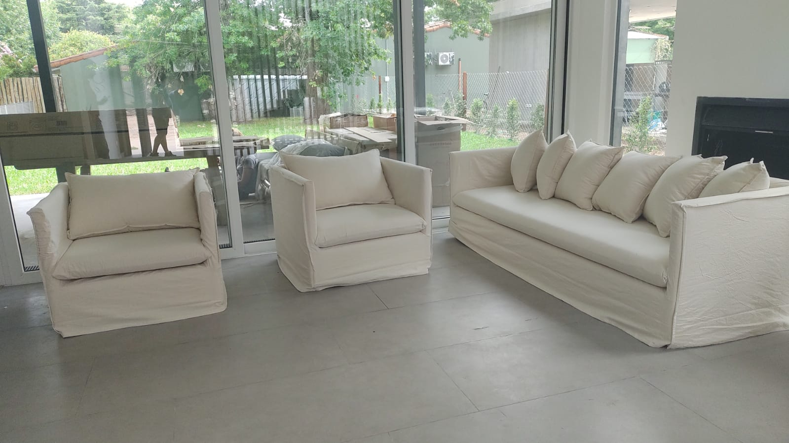

Sillón Ghost a Medida
Estética desvestida y relajada. Un diseño que aporta frescura y elegancia chic a cualquier espacio.

Estética desvestida y relajada. Un diseño que aporta frescura y elegancia chic a cualquier espacio.

Estructura de eucalipto saligna con placa soft. La combinación perfecta entre firmeza y suavidad.

Sus fundas desmontables en Tusor o lino llegan hasta el suelo, creando ese look icónico y relajado.
CONSULTAR POR WHATSAPP